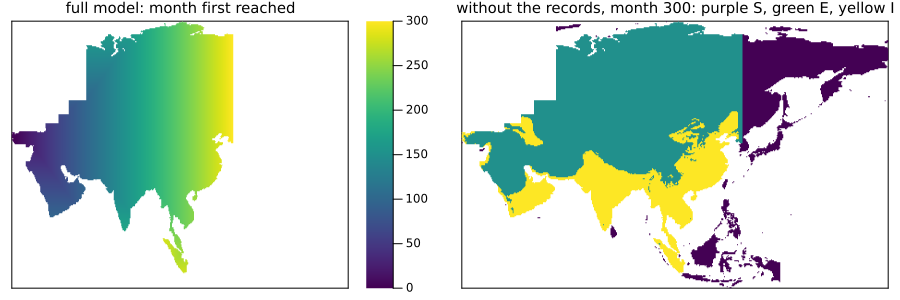

Maps between zoo models
Simon Frost
- Overview
- Forgetting what a model only records
- A management model and its base model
- Percolation inside a viral front
- Quotients of models with callbacks
- A block rule: enemies that cannot catch anything
- A short run can hide a dependence
- A layer used only within a step
- What a quotient cannot express
- Summary
- References
Overview
The vignette on maps between models used small examples written for the purpose. This one tries the same ideas on the published models of EcologicalCellularAutomata, where the rules were written for other reasons and much of the dynamics lives outside them. Several relations turn out to hold exactly, and the attempt shows what a map of models cannot see.
A map of models compares rules, but a zoo problem is more than its rule: it may have covariates, kernel fields and callbacks acting on the whole lattice. So there are two checks. is_model_map(f) tests the rules on local configurations. is_model_map(f, prob) runs both models on one problem and compares every saved state exactly, and is the only one that sees the rest. Its true holds for that problem.
This is a research extension, beyond the papers the package implements. The package does not depend on the zoo; only this vignette loads it.
ENV["GKSwstype"] = "100"
using CategoricalCellularAutomata
using EcologicalCellularAutomata
using CellularAutomataCore: CellularAutomataCore, CAProblem, solve, remake, Torus, Margolus
using Catlab: codom
using PlotsForgetting what a model only records
The Tuta absoluta model follows the leafminer’s spread across Asia on monthly climate data (Guimapi et al. 2020). Each land cell is susceptible, exposed or invaded, and two more layers record the months it was first reached and invaded. forget_layers builds the model without them from the same rule, so no second copy of the rule can drift from the first. Whether the result is a map is a real question, answered here by running 300 months over the real climate:
tuta = build(:tuta_absoluta_asia)
plain_tuta = forget_layers(tuta, :reached, :invaded)
tprob = problem(:tuta_absoluta_asia)
(codomain=codom(plain_tuta).name, months=tprob.tspan[2],
is_model_map=is_model_map(plain_tuta, tprob),
land_can_be_forgotten=is_model_map(forget_layers(tuta, :land), tprob))(codomain = :tuta_absoluta_asia_without_reached_invaded, months = 300, is_model_map = true, land_can_be_forgotten = false)The records add nothing to the dynamics, only a history that the smaller model cannot give: the figure sets the month each cell was reached beside the stage that the smaller model holds at the end. Forgetting land instead is not a map, since the rule reads it.
u = solve(tprob).u[end]
small = pushforward(plain_tuta, u)
northup(a) = reverse(a; dims=1)
plot(heatmap(northup(map(x -> x < 0 ? NaN : Float64(x), u.reached)); c=:viridis,
title="full model: month first reached", titlefontsize=10),
heatmap(northup(map((s, l) -> l ? Float64(s) : NaN, small.state, small.land));
c=:viridis, colorbar=false, clims=(0, 2),
title="without the records, month 300: purple S, green E, yellow I",
titlefontsize=10);
layout=(1, 2), size=(900, 300), ticks=false, framestyle=:box)
A management model and its base model
The management model of the emerald ash borer (Mercader et al. 2011b) extends the base model (Mercader et al. 2011a) with two layers and three treatments. The two are separate pieces of code, each with its own rule and its own callback. With no treatment the management model should be the base model. Mapping a cell to the base model’s layers states that exactly. The parameters map by name, which is the default.
The base model has a callback of its own, and each callback belongs to its own model, so the map does not carry one across. callback= names the codomain’s:
management, base = build(:eab_management), build(:emerald_ash_borer)
layers = Tuple(s.name for s in base.states)
reduce_to_base = ModelMap(management, base, c -> NamedTuple{layers}(c))
map((:none, :girdling, :insecticide, :ash_reduction)) do treatment
prob = problem(:eab_management; n=60, years=12, treatment)
(; treatment, is_map=is_model_map(reduce_to_base, prob; callback=eab_callback()))
end((treatment = :none, is_map = true), (treatment = :girdling, is_map = false), (treatment = :insecticide, is_map = false), (treatment = :ash_reduction, is_map = false))Without treatment the two programs agree exactly at every saved state of a twelve-year spread, including a callback that disperses beetles across the whole landscape. Each treatment breaks the map, as it should.
The stress bias shows why the two checks differ. It changes only how beetles disperse, in the callback, and the rule never reads it. The local check, given cell states from a real run, sees nothing wrong, and only running the problem exposes the difference:
biased = problem(:eab_management; n=60, years=12, stress_bias=true)
seen = solve(biased).u
all_layers = keys(seen[1])
cells = unique(reduce(vcat,
[vec(map((xs...) -> NamedTuple{all_layers}(xs), values(u)...))
for u in seen]))
(cell_states=length(cells),
rules_commute=is_model_map(reduce_to_base; cells, p=biased.p, samples=5000),
the_run_commutes=is_model_map(reduce_to_base, biased; callback=eab_callback()))(cell_states = 36919, rules_commute = true, the_run_commutes = false)Percolation inside a viral front
The multicomponent Domany–Kinzel model of a viral front (Capitán et al. 2011) gives each cell a replicative ability r in 0:R. Its documentation says that without mutation, and with every cell at R, it is directed bond percolation. As a map, that claim has content: r ↦ R r sends the model with R = 1 into the model with R, provided that the resistance is rescaled. A cell with n offspring resists with probability π^n, and multiplying abilities by R multiplies n by R, so π must become π^(1/R). The parameter map does the work:
map((2, 3, 6)) do R
bond, front = build_domany_kinzel_viral(; R=1), build_domany_kinzel_viral(; R)
embed = ModelMap(bond, front, r -> Int8(R * r);
parameters=p -> (π=p.π^(1 / R), p=0.0, q=0.0))
still = (π=0.3, p=0.0, q=0.0)
prob = CAProblem(bond, (; r=Int8(1)), 400, still; space=Torus(500), seed=3)
(; R, without_mutation=is_model_map(embed; p=still, contexts=2000, dims=1),
with_mutation=is_model_map(embed; p=(π=0.3, p=0.2, q=0.0), contexts=2000, dims=1),
a_run=is_model_map(embed, prob))
end((R = 2, without_mutation = true, with_mutation = false, a_run = true), (R = 3, without_mutation = true, with_mutation = false, a_run = true), (R = 6, without_mutation = true, with_mutation = false, a_run = true))These are checks of the random numbers at 2000 contexts and over one run, not a proof. The proof is the algebra above, up to rounding: π^n and (π^(1/R))^(R n) can differ in their last bits, so a draw could in principle fall between them, though that has a chance of order 10^-16 per draw.
Quotients of models with callbacks
Fourteen of the zoo’s models do much of their work in callbacks: decisions on the whole lattice, dispersal, individuals acting one at a time. A callback reads the whole state, so forgetting a layer needs a callback for the smaller state, and callback=:lift builds it. After each step the state is lifted, with the forgotten layer at its default, the original callback acts on the lifted state, and the result is mapped down. The Lean library proves the construction: it commutes exactly when the callback does not depend on what is forgotten, and it is then the only callback that does (Lumping.liftCallback, Lumping.callback_unique, Lumping.runWith_quotient). Whether that holds for a given model is what running it tells us:
function forgets(id, layer; kw=(;))
return (model=id, layer, setting=join(("$k=$v" for (k, v) in pairs(kw) if k != :n), ", "),
is_map=is_model_map(forget_layers(build(id), layer), problem(id; kw...);
callback=:lift))
end
[forgets(:cassava_mealybug, :loss), forgets(:cassava_mealybug, :since),
forgets(:potato_moth_farmers, :source), forgets(:potato_moth_farmers, :carriers),
forgets(:western_x_orchard, :age), forgets(:western_x_orchard, :clock),
forgets(:eab_management, :large; kw=(; n=40)),
forgets(:eab_management, :large; kw=(; n=40, treatment=:girdling)),
forgets(:eab_management, :phloem0; kw=(; n=40)),
forgets(:eab_management, :phloem0; kw=(; n=40, stress_bias=true))]10-element Vector{@NamedTuple{model::Symbol, layer::Symbol, setting::String, is_map::Bool}}:
(model = :cassava_mealybug, layer = :loss, setting = "", is_map = 1)
(model = :cassava_mealybug, layer = :since, setting = "", is_map = 0)
(model = :potato_moth_farmers, layer = :source, setting = "", is_map = 1)
(model = :potato_moth_farmers, layer = :carriers, setting = "", is_map = 0)
(model = :western_x_orchard, layer = :age, setting = "", is_map = 1)
(model = :western_x_orchard, layer = :clock, setting = "", is_map = 0)
(model = :eab_management, layer = :large, setting = "", is_map = 1)
(model = :eab_management, layer = :large, setting = "treatment=girdling", is_map = 0)
(model = :eab_management, layer = :phloem0, setting = "", is_map = 1)
(model = :eab_management, layer = :phloem0, setting = "stress_bias=true", is_map = 0)Each true has a reason in the model’s code. The mealybug’s loss is written by the rule and read only by a summary of the yield. The potato moth’s source, the origin of a cell’s moths, is the published counterpart of the lineage label in the previous vignette: it is copied from a neighbour or set when a farmer’s team brings moths in, and it never decides anything. In the western X orchard, age sets yields and costs in the economic summary but not the epidemic. The ash borer’s layers show that the answer belongs to the problem as well as the model: large matters once there is a treatment, and phloem0 only under the stress bias.
A block rule: enemies that cannot catch anything
The three-layer Bt crop model is a block rule (Yang et al. 2009), solved with the Margolus scheme: pests and their enemies move in 2 × 2 blocks over a plant layer. Its quotient is a block rule too, lifting a block and mapping the new block down. None of its nine layers can be forgotten alone, but all four enemy layers can be forgotten together when enemies cannot catch anything. Then they never touch the pests, though they are there at the start and only later starve:
bt = build(:bt_crop_three_layer)
no_enemies = forget_layers(bt, :enemy, :enemy_age, :enemy_hunger, :enemy_genome)
map(((; P_DB=0.6, P_DC=0.6), (; P_DB=0.0, P_DC=0.0))) do predation
prob = problem(:bt_crop_three_layer; pmap=predation)
(; predation, enemies_at_start=count(prob.u0.enemy),
is_map=is_model_map(no_enemies, prob; alg=Margolus()))
end((predation = (P_DB = 0.6, P_DC = 0.6), enemies_at_start = 4981, is_map = false), (predation = (P_DB = 0.0, P_DC = 0.0), enemies_at_start = 4981, is_map = true))A short run can hide a dependence
A false disproves a map, but a true holds only for the problem and the span that was run. The grapevine leafroll model has an age layer, and forgetting it looks harmless at first:
vine = problem(:grapevine_leafroll)
forget_age = forget_layers(build(:grapevine_leafroll), :age)
full = solve(vine)
down = solve(pushforward(forget_age, vine; callback=:lift))
(first_month_that_differs=full.t[findfirst(i -> pushforward(forget_age, full.u[i]) !=
down.u[i], eachindex(full.u))],
months=vine.tspan[2],
is_map_over=map(T -> T => is_model_map(forget_age, remake(vine; tspan=(0, T));
callback=:lift), (40, 60, 100, 600)))(first_month_that_differs = 61, months = 600, is_map_over = (40 => true, 60 => true, 100 => false, 600 => false))How long an exposed vine takes to become infective depends on whether it is younger than 60 months, and the lift makes every vine a new one, so the two runs agree until the first vines come of age. No run shorter than that could tell them apart.
A layer used only within a step
Some layers matter within a step and not between steps. The ash borer’s larvae1 is written by the rule and read by the callback in the same step, and the next rule overwrites it without reading it, so what a saved state holds in that layer is never used. Even so, a lifted callback cannot forget it. It maps down between the rule and the callback, so the larvae are gone before the callback can see them.
callback=:lift_step treats the rule and the callback as one step: it lifts the state, runs the original’s whole step, and maps the result down. Every step starts from the lift rather than from where the original’s last step ended, so what is forgotten cannot be carried along, and a layer that matters still fails. The first check below compares the two constructions:
function both_ways(id, layer; kw=(;))
f, prob = forget_layers(build(id), layer), problem(id; kw...)
return (model=id, layer, setting=join(("$k=$v" for (k, v) in pairs(kw) if k != :n), ", "),
lifted_callback=is_model_map(f, prob; callback=:lift),
whole_step=is_model_map(f, prob; callback=:lift_step))
end
[both_ways(:emerald_ash_borer, :larvae1; kw=(; n=41)),
both_ways(:eab_management, :larvae1; kw=(; n=40)),
both_ways(:eab_management, :larvae1; kw=(; n=40, treatment=:girdling)),
both_ways(:eab_management, :larvae1; kw=(; n=40, stress_bias=true)),
both_ways(:emerald_ash_borer, :adults; kw=(; n=41)),
both_ways(:eab_management, :phloem0; kw=(; n=40)),
both_ways(:eab_management, :phloem0; kw=(; n=40, stress_bias=true))]7-element Vector{@NamedTuple{model::Symbol, layer::Symbol, setting::String, lifted_callback::Bool, whole_step::Bool}}:
(model = :emerald_ash_borer, layer = :larvae1, setting = "", lifted_callback = 0, whole_step = 1)
(model = :eab_management, layer = :larvae1, setting = "", lifted_callback = 0, whole_step = 1)
(model = :eab_management, layer = :larvae1, setting = "treatment=girdling", lifted_callback = 0, whole_step = 1)
(model = :eab_management, layer = :larvae1, setting = "stress_bias=true", lifted_callback = 0, whole_step = 1)
(model = :emerald_ash_borer, layer = :adults, setting = "", lifted_callback = 0, whole_step = 0)
(model = :eab_management, layer = :phloem0, setting = "", lifted_callback = 1, whole_step = 1)
(model = :eab_management, layer = :phloem0, setting = "stress_bias=true", lifted_callback = 0, whole_step = 0)Forgetting larvae1 is a map in both models, with or without a treatment. It is not vacuous, since the layer holds millions of larvae in the saved states, and the smaller model does without them. Its rule commutes too, so the callback alone is what the lifted construction trips over:
borer = problem(:emerald_ash_borer; n=41)
no_larvae1 = forget_layers(build(:emerald_ash_borer), :larvae1)
borer_run = solve(borer).u
borer_layers = keys(borer_run[1])
borer_cells = unique(reduce(vcat,
[vec(map((xs...) -> NamedTuple{borer_layers}(xs), values(u)...))
for u in borer_run]))
(peak_larvae1=round(maximum(u -> sum(u.larvae1), borer_run); sigdigits=6),
layers_left=keys(solve(pushforward(no_larvae1, borer; callback=:lift_step)).u[end]),
rules_commute=is_model_map(no_larvae1; cells=borer_cells, p=borer.p, samples=5000))(peak_larvae1 = 4.28735e6, layers_left = (:phloem, :adults, :larvae2_odd, :larvae2_even, :border, :phloem0), rules_commute = true)The whole step does not hide a dependence: adults still fails, and so does phloem0 under the stress bias, where the callback really reads it between steps. Where a lifted callback works the two constructions are the same, so its answers carry over.
The Lean library proves these relations. The quotient runs every run of the original when the whole step does not depend on what is forgotten, and it is then the only whole step that does (Lumping.runWith_wholeStep_quotient, Lumping.wholeStep_unique). When the rule and callback pass separately, lifting the whole step gives the same thing as the lifted callback (Lumping.wholeStep_descends, Lumping.liftCallback_wholeStep). And the whole step is strictly more general: a small model has a rule and a whole step that can forget a layer while its callback cannot, which is the shape of the larvae here (wholeStep_strictly_more).
Trying every layer of the zoo’s layered models one at a time, 101 layers in 20 models at their usual settings with some of the long runs shortened, these two larvae1 layers are the only answers that change. Every layer that passed with a lifted callback passed with the whole step too.
What a quotient cannot express
Some limits remain:
- The problem that
callback=:lift_stepbuilds runs the original’s whole step and has no local rule of its own, so it can be solved but not checked cell by cell. - A layer that never leaves its default passes vacuously.
roguedandtestedin the grapevine model are like that at its default settings, which says nothing about the runs that use them. - Event rules, which give rates rather than a next state, are refused by
quotient. - A callback may refuse to run on what is left. Forgetting
farmersin the potato moth model raises the model’s own error, and that is an answer too. - The dune model with
speedup = 0is not an example: it is one model at another parameter value, not a second model.
Summary
| relation | check | result |
|---|---|---|
| Tuta forgetting its record layers | run, 300 months on real climate | a map |
Tuta forgetting land | run | not a map |
| ash borer management, no treatment → base model | run, with the base model’s callback | a map |
| ash borer management, any treatment → base model | run | not a map |
| ash borer management, stress bias → base model | rules; run | rules commute, the run does not |
viral front R = 1 → R, no mutation, π ↦ π^(1/R) | rules at 2000 contexts; run | a map |
| the same, with mutation | rules | not a map |
mealybug without loss, potato moth without source, orchard without age | run, lifted callback | a map |
| Bt crop without its enemy layers, no predation | run, block rule | a map |
| the same, with predation | run, block rule | not a map |
grapevine without age | run, lifted callback | not a map, from month 61 |
ash borer without larvae1 | run, lifted callback | not a map: read between rule and callback |
| the same | rules; run, whole step | rules commute, and a map |
ash borer without adults | run, whole step | not a map |
References
Capitán, José A., José A. Cuesta, Susanna C. Manrubia, and Jacobo Aguirre. 2011. “Severe Hindrance of Viral Infection Propagation in Spatially Extended Hosts.” PLoS ONE 6 (8): e23358. https://doi.org/10.1371/journal.pone.0023358.
Guimapi, Ritter A., Ramasamy Srinivasan, Henri E. Tonnang, Paola Sotelo-Cardona, and Samira A. Mohamed. 2020. “Exploring the Mechanisms of the Spatiotemporal Invasion of Tuta absoluta in Asia.” Agriculture 10 (4): 124. https://doi.org/10.3390/agriculture10040124.
Mercader, Rodrigo J., Nathan W. Siegert, Andrew M. Liebhold, and Deborah G. McCullough. 2011a. “Influence of Foraging Behavior and Host Spatial Distribution on the Localized Spread of the Emerald Ash Borer, Agrilus Planipennis.” Population Ecology 53 (2): 271–85. https://doi.org/10.1007/s10144-010-0233-6.
Mercader, Rodrigo J., Nathan W. Siegert, Andrew M. Liebhold, and Deborah G. McCullough. 2011b. “Simulating the Effectiveness of Three Potential Management Options to Slow the Spread of Emerald Ash Borer (Agrilus Planipennis) Populations in Localized Outlier Sites.” Canadian Journal of Forest Research 41 (2): 254–64. https://doi.org/10.1139/X10-201.
Yang, Jun, Zhi-Rui Wang, De-Li Yang, Qing Yang, Jun Yan, and Ming-Feng He. 2009. “Ecological Risk Assessment of Genetically Modified Crops Based on Cellular Automata Modeling.” Biotechnology Advances 27 (6): 1132–36. https://doi.org/10.1016/j.biotechadv.2009.05.024.